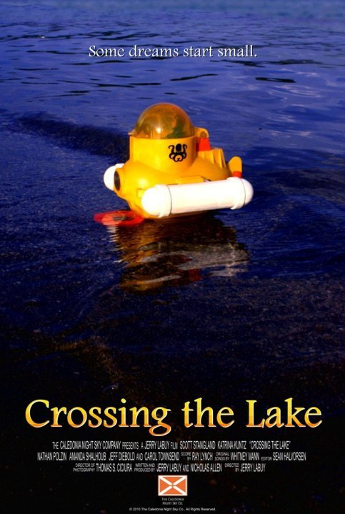
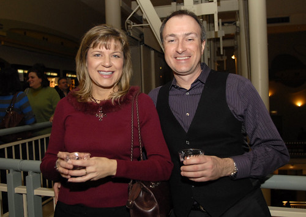

Crossing the Lake: The Trailer!
Greetings Fans! The official festival trailer for Crossing the Lake has been released! You can spot Carol at the :18 second mark, in the photographs on the table on the left side of the screen, and at :25 seconds lying…
Miss Ohio Wins Again!
Just a quick note... Miss Ohio, in which Carol played Natalie's mother Janet, was screened at the Visionfest 2010 film festival in New York City last week, and came away with two more awards: Best Picture and Best…
Cheaters... NOT the TV show
Greetings Fans! This month, Carol returns to her theatrical beginnings and is working as an extra on the new Ron Howard film, Cheaters, which is filming in Chicago this summer. She is currently working on scenes which…

Crossing the Lake Premiere
"After years of making excuses and putting his life on-hold, Patrick Turkel tries to stop living in his own head and dive into the real world." Crossing the Lake is a short film by Nicholas Allen & Jerry LaBuy of the…
¡Ole!
Greetings Fans! Spring has come and gone and come again; and with Spring have come several TV shows filming in Chicago. Our favorite actress has been booked to work an upscale party scene for the ABC pilot of Matadors,…

Carol Immortalized as Sissie Brockman
Greetings Fans! Back in March 2009, Carol appeared in Tales of Darkest Suburbia, at Riverfront Playhouse in Aurora. Carol played Sissie Brockman in the tale in Act 1 called The Rubbing. As this was the premier stage…

Chicago Overcoat
It's a coffin... look it up. Chicago Overcoat screened in Chicago last week, and Carol and I were on hand for the gala event. Carol worked as an extra in the film, although unfortunately, we were unable to spot her on…

I Am Unanimous In This!
Greetings fans! Are You Being Served? is in its second week of performances, and you have only four more opportunities to experience it. George Rawlinson, formerly of the Elgin Courier News writes: "... On a recent…

Are You Free...?
I'm free! The snow has stopped falling and the roads should be clear, so if you are free tonight, why not head on out to Elgin to see Carol as Mrs. Slocombe in Are You Being Served? Are You Being Served? opens tonight…
Christmas Carol and a Call From Santa
Merry Christmas Fans! Having just played Meredith, the Christmas Cougar in Seven Plays in Seven (Holi)Days, Christmas Carol continues her journalistic theme in the following interview with M.C. Antil from Santa 1-on-1.…
1 comment